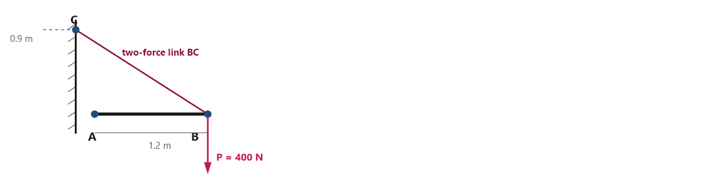

1Paper
Closed book. g = 9.81 m/s². Show free-body diagrams, shear and moment diagrams; marks are deducted when they are missing. Give answers to three significant figures.
1. (6) Dimensions, units and significant figures
The angle of twist of a circular shaft is θ = TL/(JG). (a) Find the dimensions of J in terms of length L and force F. (b) State the SI and the US unit of J. (c) Convert 1 kip·ft into N·m. (d) A section has J = 5.2 × 10⁶ mm⁴; express it in m⁴.
2. (10) Moment, projection and equivalent system
A force F = 250 N acts at point A(0.4, 0.3) m, along a 3-4-5 direction (4 units to the right, 3 units down). (a) Compute the moment of F about O by the lever-arm method and by the vector product. (b) Compute the moment about B(0.7, 0) m. (c) Determine the scalar and the vector projection of F onto line OB. (d) Replace F by an equivalent force-couple system at O. (e) Find where the line of action crosses the x-axis.
3. (10) Resultant of a coplanar force system
Three forces act at points of a plate (in metres): F₁ = (40, 0) N at (0, 0); F₂ = (0, −60) N at (0.5, 0.3); F₃ = (−20, −20) N at (0.8, 0.1). (a) Determine the resultant force R and its magnitude and direction. (b) Determine the resultant moment about O. (c) Locate the line of action of R and state where it crosses the x-axis.
4. (12) Equilibrium of a beam
The uniform beam AB is 6 m long and has a mass of 80 kg. It is hinged at A and held by a cable at B that makes 30° with the horizontal; a 200 kg load hangs 4 m from A. Determine the cable tension T and the reaction at A; if the cable is rated 4.0 kN, state whether it is safe.

5. (10) Three-dimensional force
A cable runs from A(0, 0, 5) m to D(3, 4, 17) m and carries a tension T = 260 N. (a) Express the force at A as a vector. (b) Find the angle it makes with the z-axis and the magnitude of its projection on the x-y plane. (c) Compute its moment about O. (d) Compute its moment about the x-axis and about the z-axis, and explain why Mz = 0.
6. (10) Three-dimensional equilibrium
A uniform rectangular plate ABCD, 2 m by 3 m and of mass 50 kg, is kept horizontal by three vertical cables attached at A(0, 0), B(2, 0) and C(2, 3) m; the corner D is unsupported. A 30 kg block is placed at E(1.0, 0.6) m. Determine the tension in each cable.
7. (12) Truss
The truss has four 4 m panels and is 3 m high; A is a pin and E a roller. Vertical loads of 20 kN act at F and H. Using the method of joints find AF and AB, using the method of sections find CD, FG and CG, and identify any zero-force member.

8. (8) Machine
The horizontal lever AB is 1.2 m long and pinned at A. End B is connected by the two-force link BC to a wall point C located 0.9 m directly above A. A vertical downward force P = 400 N acts at B. Determine the force in the link and the reaction at A.

9. (8) Centroid of a composite area
The section (dimensions in mm) is a 200 × 100 rectangle with an isosceles triangle 200 wide and 60 high on top, and a circular hole of radius 25 centred at (140, 50). Determine the centroid (x̄, ȳ).

10. (14) Shear-force and bending-moment diagrams
The simply supported beam AB is 8 m long (pin at A, roller at B). A uniform load of 4 kN/m acts from 0 to 6 m, a 20 kN concentrated force acts at x = 6 m, and a clockwise couple of 12 kN·m acts at x = 2 m. Determine the reactions, draw the shear and moment diagrams, and find |M|max and its location.